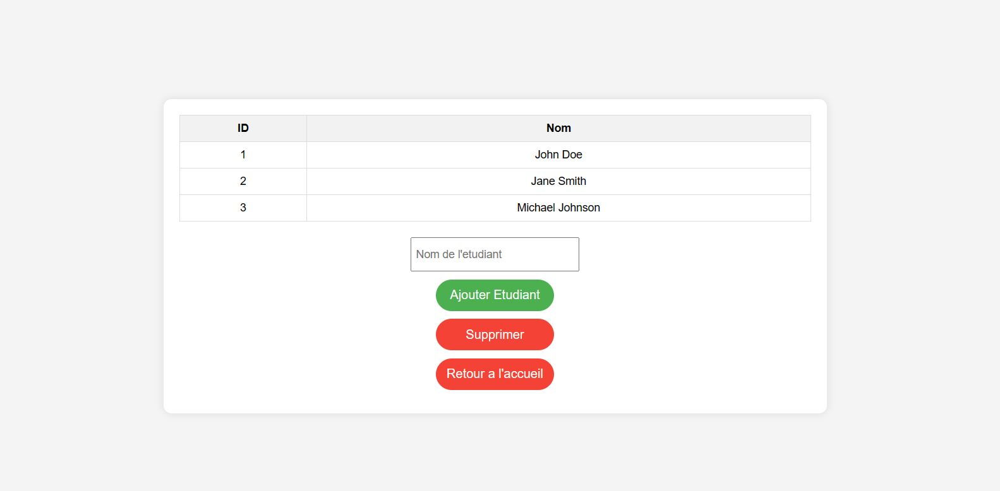
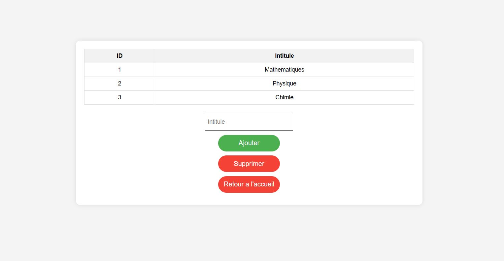
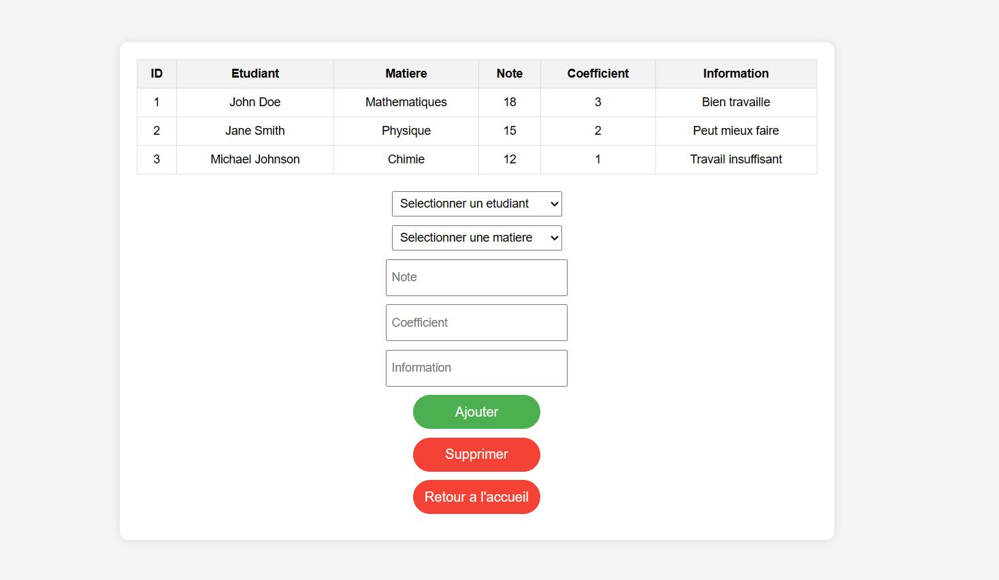
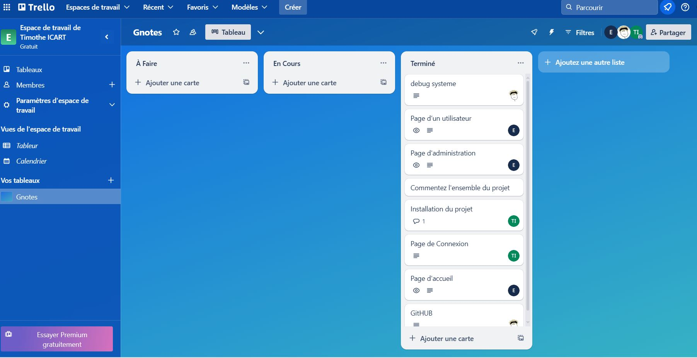
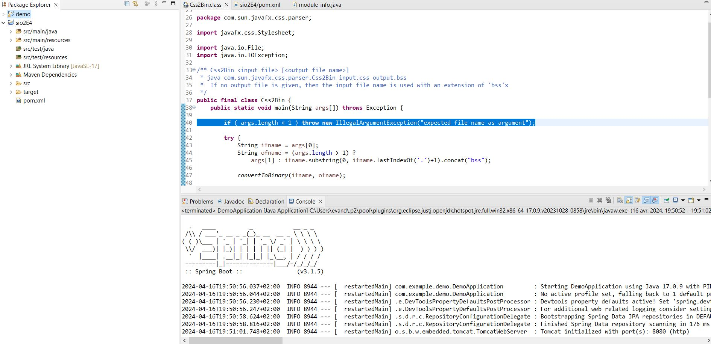
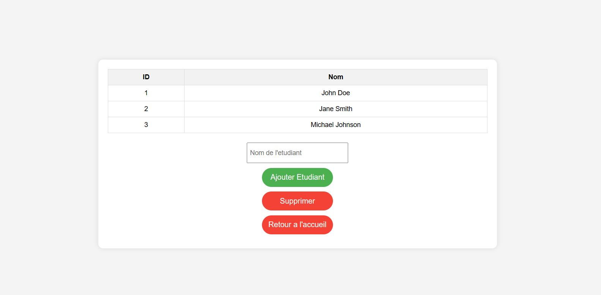
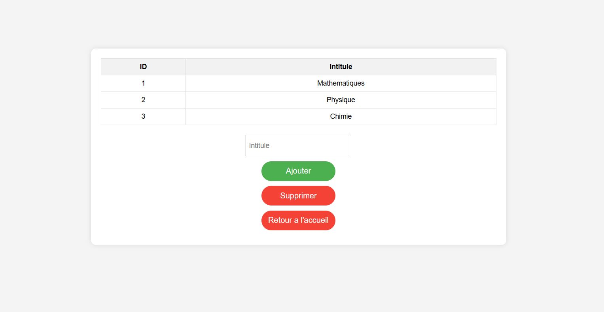
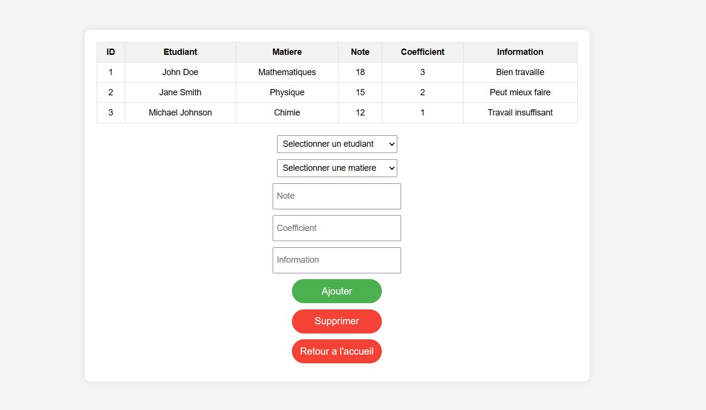
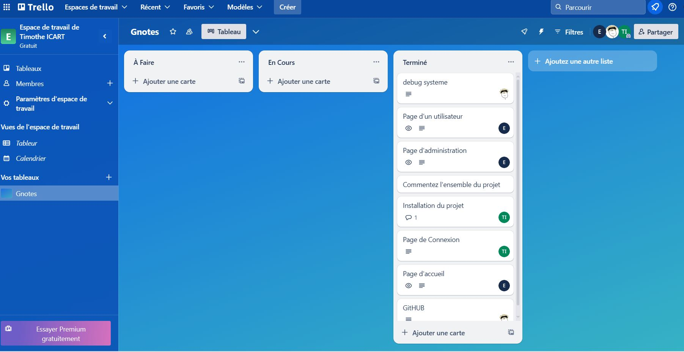
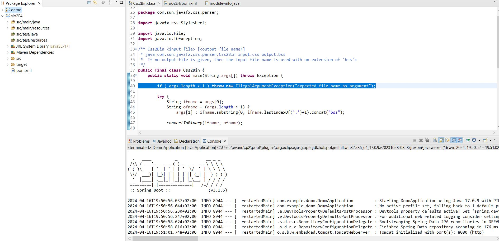

Date de début
commencement : 02/10/2023
fin : 2024
compétences :Travailler en mode projet, Répondre aux incidents et aux demandes
d’assistance et d’évolution
commencement : 02/10/2023
fin : 2024
compétences :Travailler en mode projet, Répondre aux incidents et aux demandes
d’assistance et d’évolution
Le coordinateur de la formation de BTS SIO a exprimé son souhait de fournir à tous les professeurs de la formation un outil de bureau facile à utiliser pour saisir les notes des étudiants.
Chaque enseignant(e) par matière peut
saisir le coefficient de la matière pour un contrôle donné, la note et les appréciations pour chaque
étudiant. Il/elle peut voir, au fur et à mesure de la saisie, la moyenne, la note minimale et maximale
de la classe pour sa matière. Chaque étudiant suit les 8 matières
Chaque enseignants doivent avoir accès à une vue d’ensemble des notes et des appréciations de
toutes les matières des étudiants de la formation, avec affichage du(es) major(s) de la promotion par
semestre.
 








